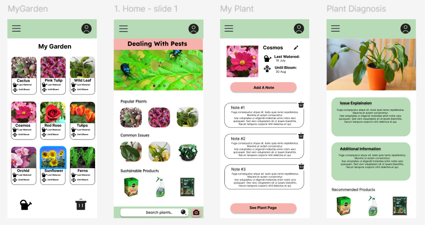
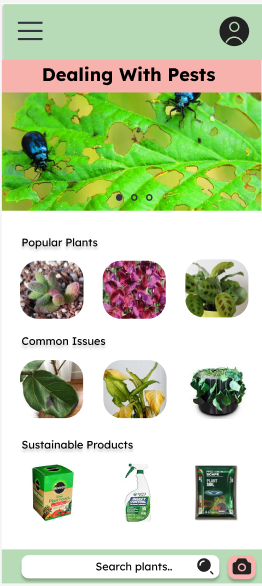
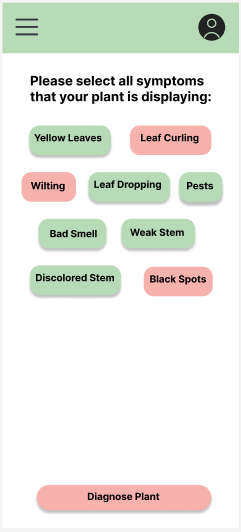
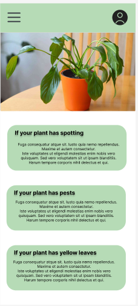
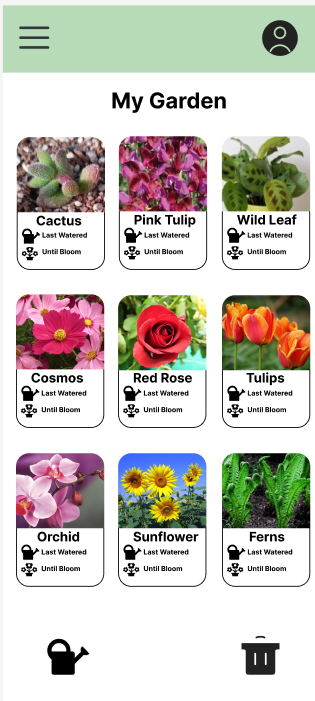
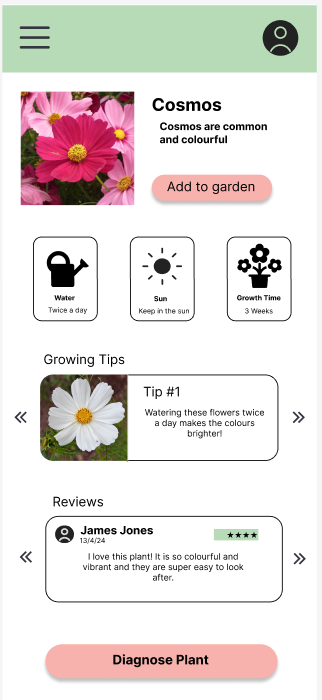

CASE STUDY
Plant Care App
UX research, design and front-end of a plant care and diagnosis application.

Overview
Plant Care App helps plant owners identify issues, get personalised care recommendations and track their plant health over time. The project focused on creating an intuitive and visually engaging experience for both beginner and experienced plant parents.
6 weeks
Project Duration
4
User Interviews
1
High-fidelity Prototype
The Problem
New plant owners often struggle to identify issues and don't know how to care for their plants properly, which leads to unhealthy plants and low confidence.
The Goal
Design a simple and friendly app that helps users diagnose plant problems, get clear care guidance and build confidence in plant care.
My Role & Process
End-to-end UX process from research to high-fidelity prototype.
Research
User interviews, surveys and competitor analysis to understand user needs.
User Persona
Created personas to represent target users and their frustrations.
Wireframes
Low-fidelity wireframes to map out the user flow and key screens.
Prototype
Interactive prototype to test usability and validate design decisions.
Testing
Usability testing and iterations to improve the overall experience.
Design Showcase
Key screens from the high-fidelity prototype.

Home

Diagnosis

Results

My Plants

Plant Information
Outcomes
- Users could easily diagnose plant problems with 90% accuracy.
- Clear care recommendations improved user confidence.
- Users found the interface friendly, calming and easy to navigate.
- Positive feedback on plant tracking and reminders feature.
Next Steps
- Add AI-powered disease detection for more accuracy.
- Implement plant care reminders and scheduling.
- Expand plant library with more species information.
- Develop iOS and Android versions.
Interested in the full case study?
View the complete case study with detailed research, user flows, wireframes, testing and final prototype.